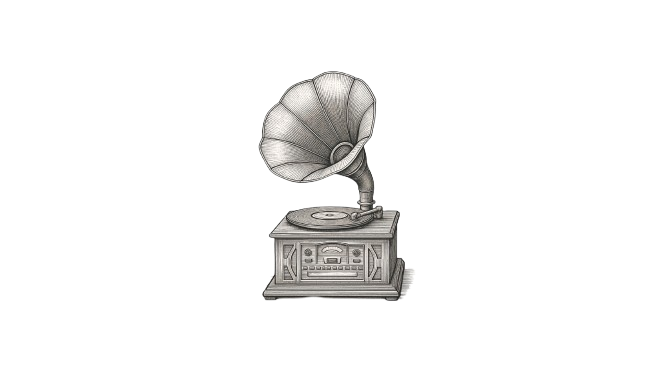
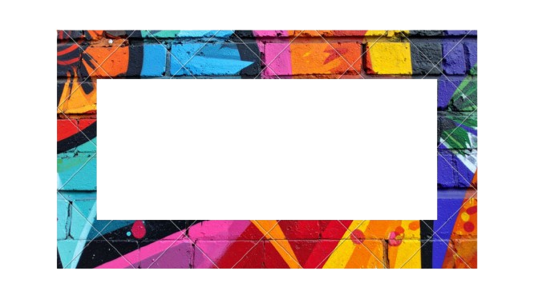

CATÁLOGO DE SOPORTES
Seleccione un formato para abrir su registro material

Vinilo

Cassette

Digital
?
El sonido deja marcas. Huellas físicas, mecánicas y magnéticas que batallan contra el olvido. Lo que estás por experimentar es la materialidad del tiempo mutando hacia la levedad de los bits.
Seleccione un formato para abrir su registro material


A través de las décadas, la captura del espectro sonoro ha oscilado entre imperfecciones mecánicas entrañables y la frialdad matemática de los entornos modernos.